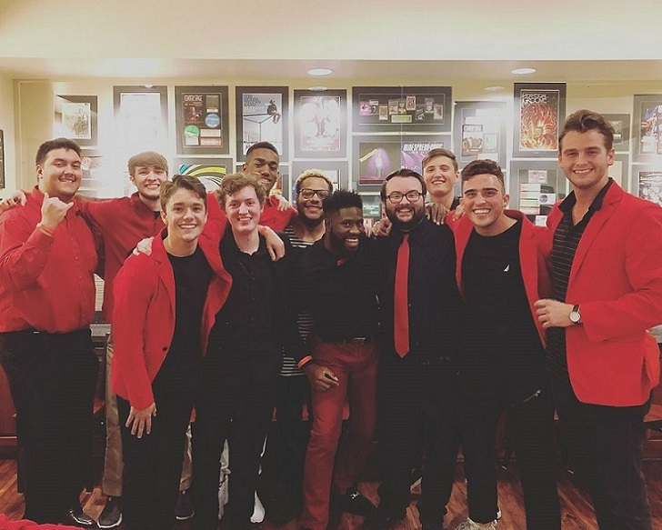
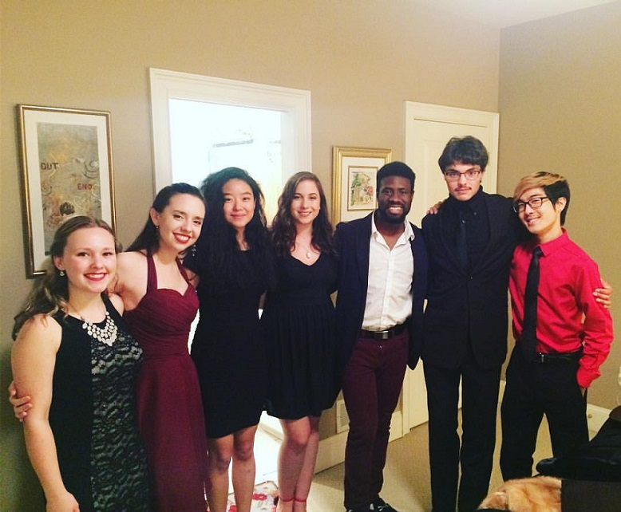
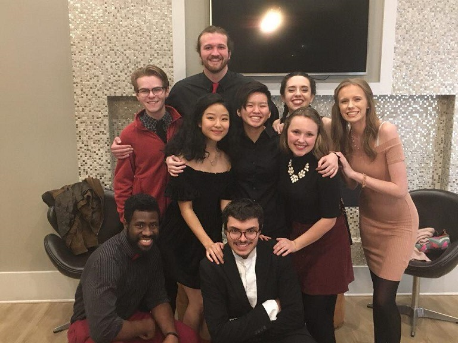

About
King David, born and raised in Lagos, Nigeria, is a vocalist packing
a powerful and unique voice that's loved and desired by many.
King came to the states during his high school days, and
it wasn't long before he realized he had serious potential.

King became the director of the University of Georgia's male acapella
group, The Accidentals. He has proven to his peers and to countless
others that he is more than capable of leading a group of such calibur.

King has garnered multiple friends along the way...

...and has performed countless times with them.
King loves to be on stage with his friends, and he enjoys making
the most out of his experiences so that he can perform even better
for the next event, gig, concert...you name it.

King dreams of becoming famous, and he knows he can do it.
It's a dream he will never stop chasing.